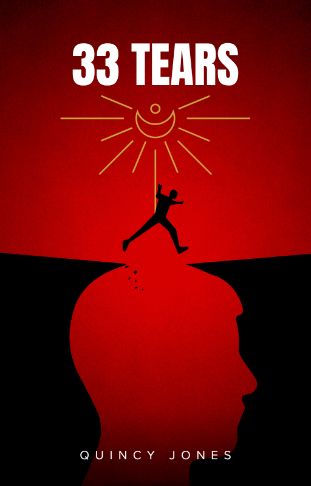

33 Tears
Written by Quincy Jones
A memoir pulling directly from experiences during the Global War on Terror and the lasting fallout that came after. It is a raw, firsthand look at processing that environment and explicitly demonstrates the Ordo Mindset in action when navigating real-world trauma and survival.